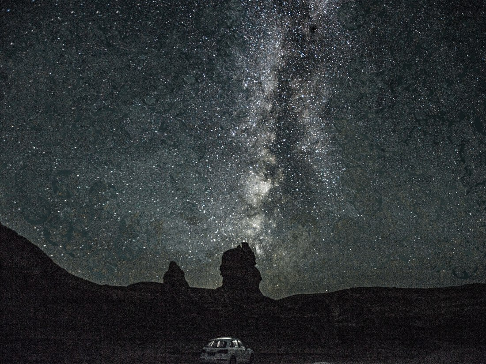
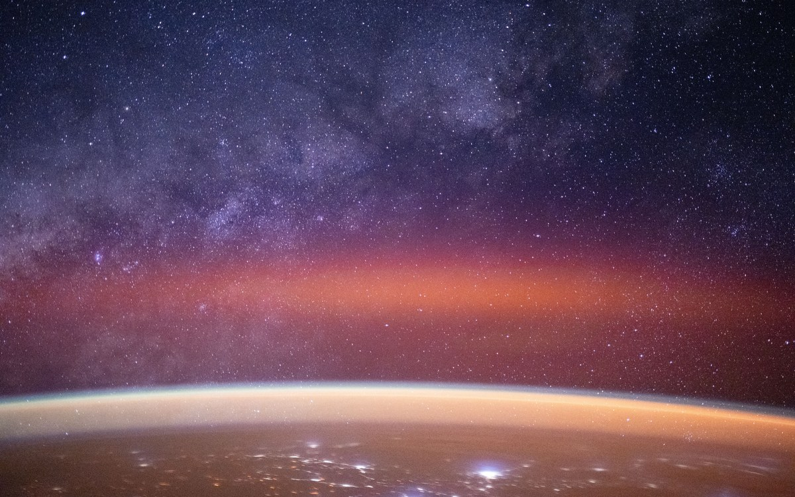
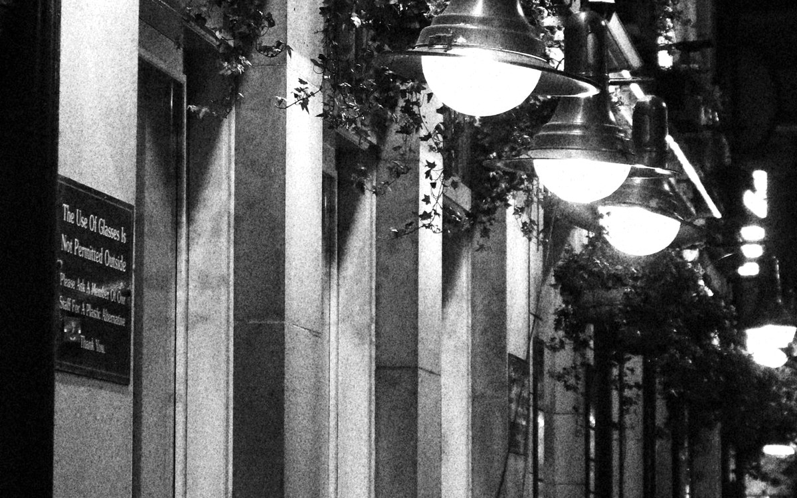

定义
国际暗空协会（DarkSky International，原 IDA）给出的定义是：光污染是可归因于夜间使用人造光的不利影响或作用，包括但不限于辉光、眩光、溢光和夜间能见度受损。
该定义有两点值得注意。其一，界定对象是影响而非光源本身——灯亮着不构成问题，灯造成了什么才是问题。其二，定义使用「包括但不限于」，说明其表现形式多于通常认知。

表现形式
日常讨论中通常将其分为四类：
- 天空辉光（skyglow）——整片天空变亮。这是最容易被误认成「只是看不见星星」的那一种，也是影响范围最大的一种。
- 眩光（glare）——过亮的光直接进入眼睛，导致看不清。它不只是「刺眼」，而是会实际降低看清目标的能力。
- 光侵入（light trespass）——光跑到它不该去的地方。路灯照进卧室、广告牌照亮隔壁居民楼，都属于这一类。
- 光杂乱（clutter）——过多、过密、方向混乱的光源挤在一起，让视觉信息变得混乱。城市商业街常见。

如何衡量夜空亮度
「比较暗」缺少可比性，需要量化指标。目前有两套通用工具。
波特尔暗空分级
2001 年，John E. Bortle 在《Sky & Telescope》发表九级分级法，以肉眼可见目标描述夜空质量，其特点是不依赖仪器。
波特尔等级为主观判断，仅供对照参考。
| 级别 | 名称 | 肉眼极限星等（mag） | SQM（mag/arcsec²） | 可见特征 |
|---|---|---|---|---|
| 1 | 极佳暗夜 | 7.6–8.0 | 21.9–22.0+ | 黄道光、对日照可见；银河能投出影子 |
| 2 | 真正的暗夜 | 7.1–7.5 | 21.5–21.9 | 肉眼可见三角座星系 M33 |
| 3 | 乡村夜空 | 6.6–7.0 | 21.3–21.5 | 银河结构清晰 |
| 4 | 乡村／郊区过渡 | 6.1–6.5 | 20.4–21.3 | M33 需侧视才能看到 |
| 5 | 郊区夜空 | 5.6–6.0 | 19.9–20.4 | 天顶的银河已被冲淡 |
| 6 | 明亮郊区 | 5.1–5.5 | 18.9–19.9 | 只有天顶能看到银河中心方向 |
| 7 | 郊区／城市过渡 | 4.6–5.0 | 18.0–18.9 | 银河不可见，天顶呈灰白色 |
| 8 | 城市夜空 | 4.1–4.5 | 18.0–18.5 | 只能认出主要星座轮廓 |
| 9 | 城市中心 | ≤4.0 | ≤18.0 | 除月亮和少数亮行星外，几乎无可观测 |
表中「肉眼极限星等」单位为星等（mag），数值越大表示肉眼可见的星越暗；「SQM」单位为 mag/arcsec²。
SQM：把夜空亮度变成一个数字
SQM（Sky Quality Meter，天空质量测量仪）由加拿大 Unihedron 公司生产，是野外光污染研究中应用最广的仪器。其结构为硅光电探测器加一片中心波长约 550 纳米的窄带滤光片，垂直对准天顶，将接收到的光子流量换算为天文星等，读数时间约三秒。
单位为 mag/arcsec²（每平方角秒星等），有两处需注意：
- 数值越大越暗。22.0 是天然暗夜，17.5 是城市核心。这与「数字大代表亮」的直觉相反。
- 它是对数刻度。相差 1 等代表亮度相差约 2.512 倍；相差 5 等代表相差 100 倍。
本站作者使用的地面实测仪器即为 SQM-L，测量规范与全部 37 个测点的原始数据见「我的研究」。
与其他污染的区别
- 不留残留物。关掉光源，影响立刻停止。水污染、大气污染、土壤污染都需要长期的治理与修复，光污染不需要——它只需要改变照明方式。
- 影响范围可以很大。一座城市的光能影响到几十公里外。天文台的选址往往要考虑上百公里内的城市规模。
- 可逆性最强。这是它与其他污染最主要的区别：不需要处理存量，只需改变设计。
- 但正因为「不脏不毒」，它长期不在环境治理的视野里。没有排放口，没有污染物指标，难以纳入现有的环境监管框架。

常见误解
「光污染就是看不见星星」
不止于此。看不见星星仅为天空辉光对天文观测的影响；此外还涉及生态（候鸟、昆虫、夜行动物）、人类健康（昼夜节律）与能源开支。详见「光污染的后果」。
「灯越亮越安全」
这是最普遍的误解之一。过亮的光产生眩光，引起瞳孔收缩与对比度下降，反而降低暗处目标的可见度；过量照明造成的明暗反差也会使暗区更难辨认。照明工程领域的主流意见是适度照明。
「换成 LED 就环保了」
LED 单灯能效显著提升，但照明成本随之下降，其使用强度往往上升：数量更多、时长更久、亮度更高。Kyba 等人在 2017 年用 VIIRS 卫星数据发现，2012 至 2016 年间全球点亮面积每年增长 2.2%，总辐射量每年增长 1.8%。在全球尺度上，LED 的节能被新增照明抵消了。详见「什么导致了光污染」。
「这是大城市的问题，和保护区无关」
光的传播距离很远。尽管 Walker 关系式中的距离指数意味着衰减较快，一座百万人口城市的光仍可在数十公里外抬高地平线附近的天空亮度——而该方向常为暗夜保护区所在。